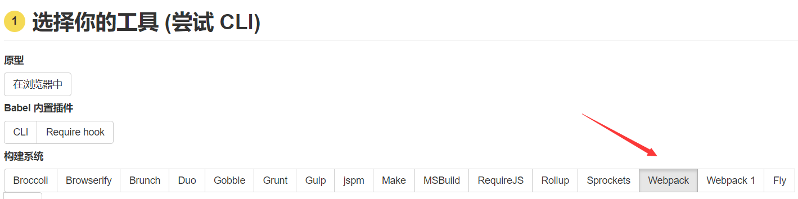
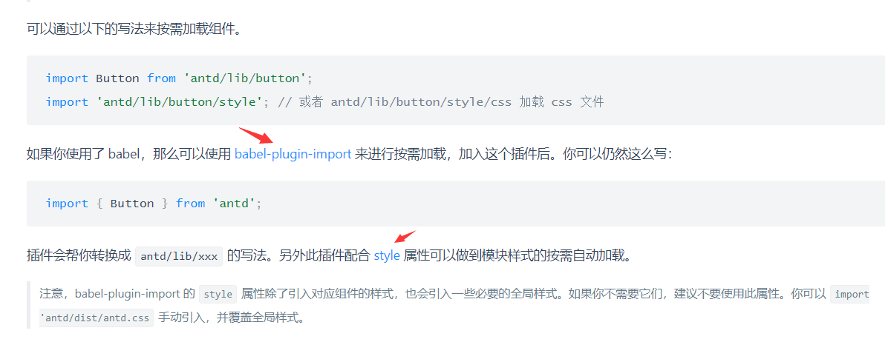

nodejs之旅(4)-webpack、babel和antd库的结合
前端(browser)模块性的开发，目前来说就不得不用到webpack(module bundle)打包工具。因为使用了react的JSX语法，所以必须要用到babel进行转码,因为browser是不认识JSX语法的。并且由于目前大部分的浏览器对ES6语法(例如：import和export等语法并不支持)，也必须用到babel对这类型新的ES6语法进行转码。鉴于前端技术发展的太快了，在此只做基本使用理念的介绍，不对细节做过多的处理！具体的各工具的使用，以在线参考文档为主！
babel和webpack的有机结合
环境:
- nodejs版本:v8.9.1
- babel版本:v7.1.4
- webpack版本:v4.12.0
- 安装babel
参照官网，本例使用的构建系统是
webpack所以选webpack,如图：

npm install --save-dev babel-loader babel-core
- 配置文件 webpack的配置文件
webpack.config.js，添加对应的loader
#由于目前暂未安装webpack,先将配置贴出来
module: {
rules: [
{ test: /\.js$/, exclude: /node_modules/, loader: "babel-loader" }
]
}
- 创建.babelrc文件 (本例不需要这一步)
文档说:“虽然已经配置好了 Babel ，但并没有让它真正生效。在项目的根目录中创建一个 .babelrc 文件并启用一些插件。“这一步其实也是可以放到webpack的配置文件里面的！(后续说明)
安装webpack(依据官网)
npm i webpack -D //-D 安装development依赖
配置webpack.config.js，具体参考文档，本例只对特殊地方做必要说明
在此开发的是音乐站点的管理员管理应用，目录形式没有按照react开发常规处理。目录结构如下
- Admin
- routes
- views
index.html
selina.js
const path = require('path');
module.exports = {
entry: './Admin/selina.js',
output: {
filename: 'bundle.js',
path: path.resolve(__dirname, 'dist/Admin')
},
devtool:'source-map',
module: {
rules: [
{
test: /\.js$/,
include: path.join(__dirname, 'Admin'),
use: [{
loader: 'babel-loader'
}]
},
{
test: /\.css$/,
use: ['style-loader', 'css-loader']
}
]
},
mode: 'development'
};
入口文件为selina.js,并且对Admin目录下的所有js文件使用babel-loader进行转码，正如babel文档步骤4所说，要想让babel生效，必须添加一些插件！
备注：
devtool选项开启代码调试功能，生成相应的.map文件便于代码的调试！
安装ES6和JSX转码器
npm install --save-dev babel-preset-env babel-preset-react
preset意思:预设
env(enviroment):环境
文档解释的很清楚，babel-preset-env预设babel转码环境为(ES2015+ES2016+ES2017)。babel-preset-react对react的JSX语法进行转码。
安装完毕之后，需要配置babel的preset让转码器生效！本来这个配置是在.babelrc文件中，因为使用了webpack，直接配置webpack就可以了两者是等价的！
//webpack.config.js
// 修改module配置节为以下
module: {
rules: [
{
test: /\.js$/,
include: path.join(__dirname, 'Admin'),
use: [{
loader: 'babel-loader',
options: {
presets: ['env', 'react','stage-0'],//添加'stage-0'为了让bable支持...扩展运算符的转码！
plugins:
[
[
'import',
{
'libraryName': 'antd',
'libraryDirectory': 'es',
'style': 'css'
}
]
]
}
}]
},
{
test: /\.css$/,
use: ['style-loader', 'css-loader']
}
]
}
其实等价与
// .babelrc
{
presets:['env','react'，'stage-0'],
plugins:[
[
'import',
{
'libraryName': 'antd',
'libraryDirectory': 'es',
'style': 'css'
}
]
]
}
上例中plugins插件部分的配置，下面做详细介绍！
antd库的使用
在做管理员应用的时候使用了第三方蚂蚁金服的antd库
- 安装
npm i antd babel-plugin-import -D
当使用组件的时候，为了简化开发编写，可以使用babel-plugin-import来按需加载,如图：

文档描述，仅使用这个插件还需手动在代码中添加css样式的引用，配合style属性可以做到模块样式的按需自动加载。进入style说明了解详细配置如下：
// .babelrc
"plugins": [
["import", { "libraryName": "antd", "libraryDirectory": "lib"}, "ant"],
["import", { "libraryName": "ant-mobile", "libraryDirectory": "lib"}, "ant-mobile"]
]
在此直接把配置糅合进webpack.config.js即可，webpack的配置节
rules.use.options提供了
- presets
- plugins
属性和
.babelrc里面的同名配置属性一一对应！